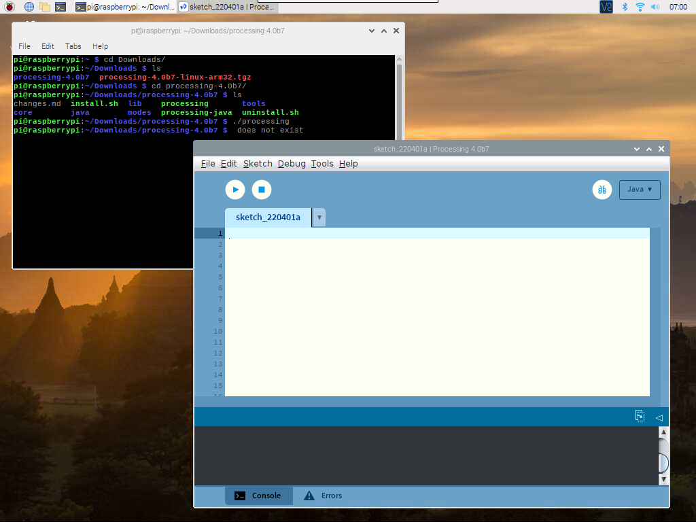
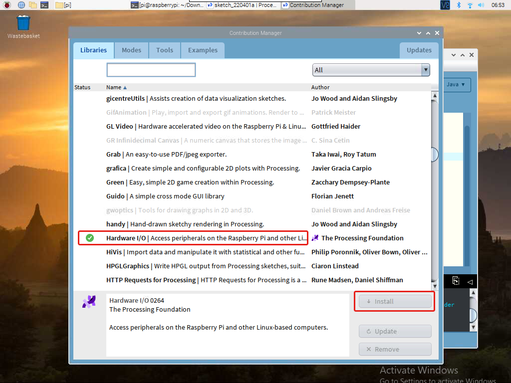

Bemerkung
Hallo und willkommen in der SunFounder Raspberry Pi & Arduino & ESP32 Enthusiasten-Gemeinschaft auf Facebook! Tauchen Sie tiefer ein in die Welt von Raspberry Pi, Arduino und ESP32 mit anderen Enthusiasten.
Warum beitreten?
Expertenunterstützung: Lösen Sie Nachverkaufsprobleme und technische Herausforderungen mit Hilfe unserer Gemeinschaft und unseres Teams.
Lernen & Teilen: Tauschen Sie Tipps und Anleitungen aus, um Ihre Fähigkeiten zu verbessern.
Exklusive Vorschauen: Erhalten Sie frühzeitigen Zugang zu neuen Produktankündigungen und exklusiven Einblicken.
Spezialrabatte: Genießen Sie exklusive Rabatte auf unsere neuesten Produkte.
Festliche Aktionen und Gewinnspiele: Nehmen Sie an Gewinnspielen und Feiertagsaktionen teil.
👉 Sind Sie bereit, mit uns zu erkunden und zu erschaffen? Klicken Sie auf [hier] und treten Sie heute bei!
Spielen Sie mit der Processing
Was ist Processing?
Processing ist eine einfache Programmierumgebung, die entwickelt wurde, um die Entwicklung visuell orientierter Anwendungen mit Schwerpunkt auf Animation zu erleichtern und Benutzern durch Interaktion sofortiges Feedback zu geben. Die Entwickler wollten ein Mittel, um Ideen im Code zu „skizzieren“. Da sich seine Fähigkeiten in den letzten zehn Jahren erweitert haben, wird Processing neben seiner Skizzierfunktion auch für anspruchsvollere Arbeiten auf Produktionsebene eingesetzt. Ursprünglich als domänenspezifische Erweiterung für Java für Künstler und Designer entwickelt, hat sich Processing zu einem ausgewachsenen Design- und Prototyping-Tool entwickelt, das für groß angelegte Installationsarbeiten, Motion Graphics und komplexe Datenvisualisierungen verwendet wird.
Processing basiert auf Java, aber da die Programmelemente in Processing recht einfach sind, können Sie es auch ohne Java-Kenntnisse erlernen. Wenn Sie mit Java vertraut sind, vergessen Sie am besten, dass Processing für eine Weile etwas mit Java zu tun hat, bis Sie sich mit der Funktionsweise der API vertraut gemacht haben.
Dieser Text stammt aus dem Tutorial Processing Overview.
Installieren Sie die Processing
Bemerkung
Bevor Sie Processing verwenden können, müssen Sie aus der Ferne auf den Raspberry Pi-Desktop zugreifen (Remotedesktop) oder ein Display für den Raspberry Pi anschließen.
Besuchen Sie zuerst https://processing.org/download und wählen Sie die Version „Linux ARM32-bit“ aus
Sie laden dann in eine .tar.gz-Datei herunter, die den meisten Linux-Benutzern bekannt sein sollte.
Laden Sie die Datei in Ihr Home-Verzeichnis herunter, öffnen Sie dann ein Terminalfenster und geben Sie Folgendes ein:
tar xvfz processing-xxxx.tgz
(Ersetzen Sie xxxx durch den Rest des Dateinamens, also die Versionsnummer.) Dadurch wird ein Ordner mit dem Namen processing-2.0 oder ähnlich erstellt. Wechseln Sie dann in dieses Verzeichnis:
cd processing-xxxx
und führe es aus:
./processing
Mit etwas Glück wird nun das Hauptverarbeitungsfenster sichtbar.
Hardware-I/O installieren
Um den GPIO des Raspberry Pi zu verwenden, müssen Sie manuell eine Hardware-I/O-Bibliothek hinzufügen.
Klicken Sketch -> Import Library -> Add Library...
Suchen Sie Hardware I/O , wählen Sie es aus und klicken Sie dann auf Installieren. Wenn Sie fertig sind, erscheint ein Häkchen-Symbol.
